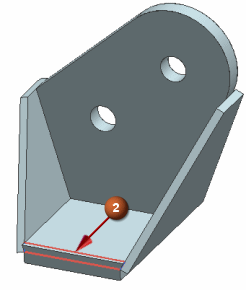
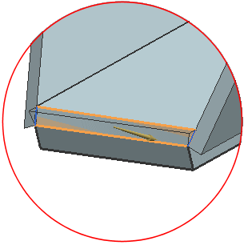

Trim the front edge
Trim Body (Surface Operations group)
-


-
Tool
-
Select Face or Plane
-

-

Caution
Make sure that the arrow on the tool is facing out of the model, as shown below. If not, click
 Reverse Direction.
Reverse Direction.

-
OK
 Part Navigator
Part Navigator
-
Through Curves (12)
-
 Hide
Hide -

 Save (Quick Access toolbar)
Save (Quick Access toolbar)